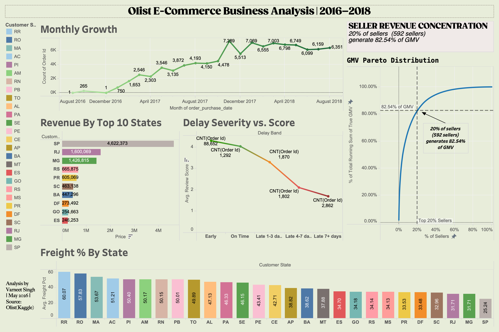

DATA
DOESN'T DECIDE.
PEOPLE WHO
READ IT DO.
I turn messy spreadsheets, scattered customer orders, and broken team workflows into clear, simple answers so decision-makers act fast — without the guesswork.
Selected Work
Real operational datasets, rigorous analysis, and actionable business strategies.

Olist E-Commerce Analytics & Logistic Bottlenecks
Analyzing 99,000+ Brazilian order records to isolate freight burdens, seller concentration risks, and delivery lead time delays.
Pharma Sales Performance & Rep Velocity
Evaluating rep fulfillment rates, prescription volume trends, and regional channel margins across key pharmacy accounts.
Vrinda Store Retail Sales & Channel Optimization
Demographic analysis of 31,000+ retail transactions — mapping top-performing state channels, gender purchase power, and Amazon vs Flipkart fulfillment.
How I Work
I help e-commerce & consumer tech teams turn messy operational data into structured, repeatable business decisions.
Document end-to-end operational workflows, identify bottleneck drop-offs, and map optimized AS-IS vs TO-BE SOPs.
Build zero-upkeep Excel & Tableau models tracking daily GMV, SKU inventory health, and rep fulfillment velocity.
Analyze 99,000+ transaction records — isolating freight burdens, seller concentration risks, and customer cohorts.
Writing & Reflections
Thoughts on business analysis, requirements gathering, and career pivots.
Requirements Gathering in BA
Writing down a requirement is only the starting point — the real work is managing, refining, and prioritizing as things change.
Read Full Post →What Progress Actually Looks Like
How understanding business analysis shifted my daily thinking — from mapping coffee ideas to building consistent habits.
Read Full Post →